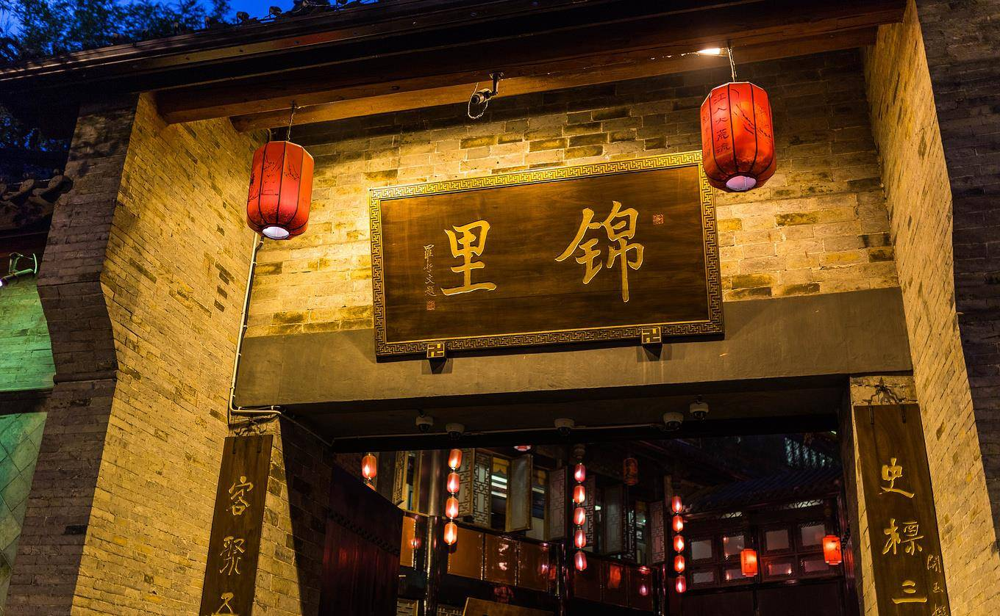
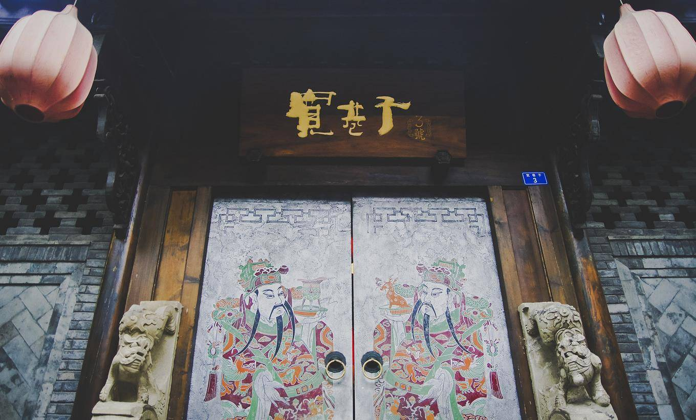

如果你想要寻找一座安逸的城市，去找寻难得的慢生活，那就来成都吧。 这个被称为“天府之国”的城市，有着“最具幸福感城市的称号”。而且成都的旅游成本并不高，不用花多少钱就可以收获到成倍的快乐。成都有哪些值得去的地方呢？今天就带大家了解一下。
【武侯祠，圆你心中的三国梦】
听到“武侯”这个名号，想必看过三国的人们一定不会陌生，没错这便是大名鼎鼎的诸葛亮的别名“诸葛武侯”。如果你在《三国演义》中最喜欢的是蜀国，这里绝对是你必须要来看看的地方了，一定可以满足你所有的渴望。

锦里是成都市内非常传统的仿古街区，因其毗邻武侯祠，所以这里便有着浓浓的三国韵味。这里一年四季的都很热闹，无论什么时候来这里都是熙熙攘攘的人群摩肩接踵，国人老外尘外之人的混杂，各色特色的成都小吃的气味交织弥漫，琳琅满目的商品，三国人物的京剧玩偶形象，站在茶馆门口变脸的街头艺人，眼前的这一切就构成了锦里的当初今世的跨越时空的穿梭。不得不说这里成了老成都的高度缩影，锦里的地方不大，但是每天却是热闹非凡。兔头、钵钵鸡、张飞牛肉带着浓郁的川渝的红色真的让人垂涎欲滴。入夜后的锦里更是人潮涌动，暗香浮动，水榭亭台之间的灯光烘托出这里的古典气烟火味儿，来这里的人不急着去工作，也没有忙着去做什么事情，只有与商家讨价还价的叫卖声，茶社里热闹非凡的京剧演唱声，这一切都是最传统的老成都的氛围，在夜色迷茫中融入其中，感受成都巴适的热闹氛围。

【宽窄巷子，在纵深间品味成都】
宽窄巷子可以说是成都最著名的一个景点了，整个景点就是老成都的三条巷子：宽巷子、窄巷子、井巷子。整个景点是由老成都的古建筑改建而成，反映的是老成都百姓生活的缩影。现在这里已经充满了各种各样的小商店铺，可以吃到成都有名的三大炮，还能找个茶馆喝喝茶聊聊天，或者享受一下成都的特色服务掏耳朵，抑或是看一场川剧表演都是不错的选择。据老一辈的成都人说，有了成都，就有了宽窄巷子，味道从来就没有变过。青砖、青瓦，在成都的岁月里浮浮沉沉，也记录下了这座城市百年的故事。清朝康熙年间准噶尔生乱，皇上派兵镇压，平乱之后留下了千余名官兵驻守在成都，建立起了官兵生活的满城，这就是宽窄巷子的前身。历史风月飘零的研磨，后来只剩下宽窄巷子的轮廓。经过改造，这里不仅可以看到老建筑的遗迹，还可以品咂到成都人的慢生活。